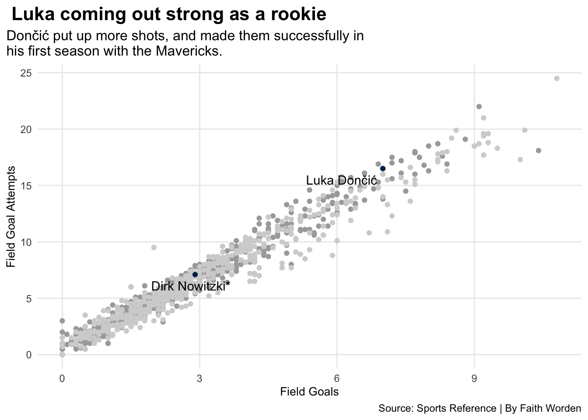
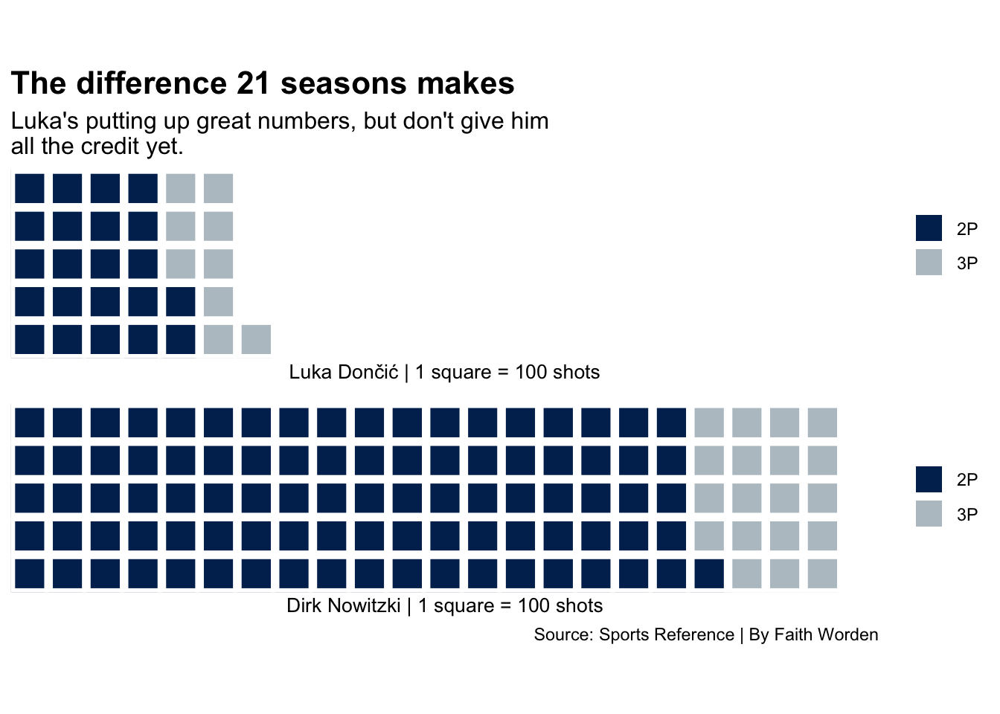

Can Luka Dončić fill the shoes of Mavericks legend Dirk Nowitzki?
sports
data
code
Author
Faith Worden
Published
December 1, 2023
Dirk Nowitzki was just a kid from Germany who grew up playing basketball. Nowitzki made the move to the states in 1998, when he was chosen as the ninth pick by the Milwaukee Bucks. His career was spent with the Dallas Mavericks after an immediate trade. Nowitzki then played 21 seasons for this franchise, and is the only NBA player to have done this. Nowtizki is known to be one of the greatest players to have ever played for the Mavericks, and to have played in the NBA. With several accomplishments and records, such as leading Dallas to their first ever championship in 2011 and the Basketball Hall of Fame, he’s had a great impact. In Dirk’s last season played, he was joined by Slovenia-native Luka Dončić. Dončić, the third pick in the 2018 NBA draft, had high expectations. He was drafted by the Atlanta Hawks, but like Nowitzki, had an immediate trade over to Dallas. In his sixth season, Dončić has already proved himself as the team’s MVP. Averaging 27.8 points per game and helping lead the team to the final four 2022, he has shown a lot of leadership and pulled out crazy stats for the team. A topic of conversation within NBA fans: can Dončić be the next Nowitzki for the team? Where is he at compared to Nowitzki’s performance? Both foreign players who entered the NBA with no college experience, a lot of people will put them head to head. Let’s dive into the question, is Dončić the new Nowitzki?
Code
library(tidyverse)library(waffle)library(ggalt)library(patchwork)rookieluka <-read_csv("1819nba.csv") |>filter(Player =="Luka Dončić")rookiedirk <-read_csv("9899nba.csv") |>filter(Player =="Dirk Nowitzki*")lukafirstseason <-read_csv("1819nba.csv")dirkfirstseason <-read_csv("9899nba.csv")ggplot() +geom_point(data=dirkfirstseason, aes(x=FG, y=FGA), color="darkgrey") +geom_point(data=lukafirstseason, aes(x=FG, y=FGA), color="lightgrey") +geom_point(data=rookiedirk, aes(x=FG, y=FGA), color="#002B5E") +geom_point(data=rookieluka, aes(x=FG, y=FGA), color="#002B5E") +geom_text(data=rookiedirk, aes(x=FG-.09, y=FGA-1, label=Player)) +geom_text(data=rookieluka, aes(x=FG-.9, y=FGA-1, label=Player)) +labs(x="Field Goals", y="Field Goal Attempts", title=" Luka coming out strong as a rookie", subtitle="Dončić put up more shots, and made them successfully inhis first season with the Mavericks.", caption="Source: Sports Reference | By Faith Worden") +theme_minimal () +theme(plot.title =element_text(size =14, face ="bold"),axis.title =element_text(size =10), plot.subtitle =element_text(size=12), panel.grid.minor =element_blank(),plot.title.position ="plot")

Comparing both their rookie seasons, Luka was putting up way more shots than Dirk, and making them successfully. Luka’s field goals per game is at 7, and Dirk’s was at 2.9. Dončić is leading in putting shots up and making them, along with being in the top half of other players in the NBA for field goals as well. To note, Luka’s first season was played with Nowitzki in his last season of his career.
Now, we’re looking into the middle of both their careers. How are Dončić and Nowtizki doing defensively? It’s important to have a strong rebounder because it gives your team a good defense, limits the offense of the other team, and gives your team possession of the ball and opportunity to score. Though Nowitzki may be known for a strong offense and his one-leg fadeaway shot, he’s contributed defensively and has been able to take possession of the ball. Nowitzki’s defensive rebounding declined overtime. Dončić’s has slightly as well, but has remained more consistent.
Code
library(tidyverse)library(waffle)library(ggalt)luka <-c("2P"=2284, "3P"=978, 7907)dirk <-c("2P"=9187, "3P"=1982)iron(waffle(luka/100,rows =5,title="Luka's Career Points",xlab="Luka Dončić | 1 square = 100 shots",colors =c("#002B5E", "#B8C4CA", "#FFFFFF")) +labs(title="The difference 21 seasons makes", subtitle="Luka's putting up great numbers, but don't give him all the credit yet.") +theme(plot.title =element_text(size =14, face ="bold"),axis.title =element_text(size =10),axis.title.y =element_blank(),plot.subtitle =element_text(size=12), ),waffle(dirk/100,rows =5,xlab="Dirk Nowitzki | 1 square = 100 shots", colors =c("#002B5E", "#B8C4CA")) +labs(caption="Source: Sports Reference | By Faith Worden"))

Let’s take a look into both of the Mavericks’ stars’ career statistics. Both players are putting up more two-pointer’s than three’s. Dončić hasn’t even gotten to half of Nowitzki’s two points and three point shots in his career total, but he’s at a decent spot. It’s going to take years to get to a level that someone once was at 21 seasons, but Dončić is crawling up close.
After all, Dončić has been compared to Nowitzki his whole career. Is Dončić going to pull a Nowitzki and stay loyal to Dallas his whole career? Will Luka beat this and that record and surpass Dirk in different stats? What will it take for Dončić to pass Nowitzki as the best, most successful player to come from the Mavericks’ franchise? Don’t crown Dončić quite yet, but his statistics are showing that he is a successful offensive player and he has been coming out hot, even with only playing for less than 10 seasons.